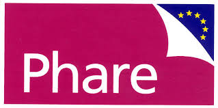

Bár neve leginkább befektetőként, és a világ egyik leggazdagabb embereként lehet ismerős, Soros György meglehetősen híres filantróp, vagyis jótékonysági tevékenysége is erősen meghatározó. Ez nemcsak idős korának jellemzője, hanem egész életében tetten érhető cselekedeteiben. Magyar szemmel és informatikai vonatkozás tekintetében azonban volt egy különösen kiemelkedő időszak, az ezredforduló körüli évek, amikor alapítványain keresztül nagyon sokat tett Magyarország informatikai fejlődéséért, a internet elérhetővé tételéért, és a magyar közoktatásért. Az alábbiakban ezekből a máig ható mérföldkövekből található néhány visszatekintés.
|
Magyarország első ingyenes e-mail szolgáltatása, a Freemail 1996-ban a Soros Alapítvány finanszírozásában valósult meg, és működött évekig. Korábban nem létezett egyetlen ingyenes magyar levelezőrendszer sem, melyet bárki szabadon használhatott volna. Fejlesztését mind a mai napig a C3 Nonprofit Kft. végzi. A C3 szervezetei szintén a Soros Alapítványhoz köthetőek.
|
 A Sulinet program eredetileg Középiskolai Internet Program néven indult. Eredményeként
A Sulinet program eredetileg Középiskolai Internet Program néven indult. Eredményeként
|
|

A Phare néven megvalósult program a szakképzés modernizálását tűzte ki célul. Ez elsősorban szakmai, másodsorban pedagógiai újításokat jelentett, ám kézzelfogható része volt, hogy az intézmények informatikai eszközöket kaptak, a tanárok pedig továbbképzéseken vehettek részt - hiszen ekkoriban még alig voltak képzett informatika tanárok.
|
Hivatkozások:
[1] https://forbes.hu/uzlet/soros-gyorgy-cimlap-2019/
[2] https://accounts.freemail.hu/site/privacypolicy
[3] http://www.c3.hu/c3/c3tortenete-hu.html
[4] http://adata.hu/_soros/kiadvany.nsf/daaf/881742c5b2b48d93c1256e47003b07a3
[5] http://publicatio.nyme.hu/1458/1/03_Feher_Czekman_tanulmany_2017_1_2_u.pdf